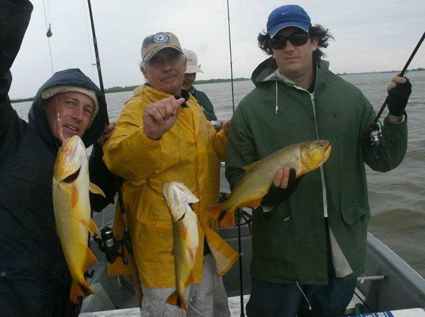
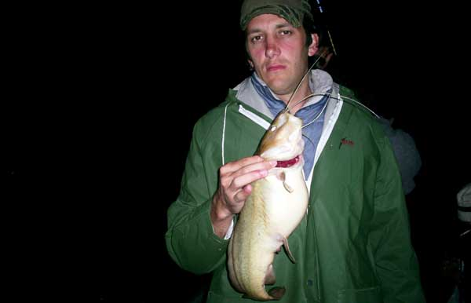

Site de Pesca

Pro Anglers
Pro Anglers
A tan solo 393 Km. desde Córdoba, por la RN 11 (4 horas y media de viaje), se encuentra Sauce Viejo a orillas del río Coronda. Pueblo que se caracteriza por su paisaje, su apreciable forestación, su tranquilidad y la hospitabilidad de la gente que lo habita. Desde la orilla del río Coronda se observan las verdes islas que hacen el ambiente ideal para los amantes de la caza y la pesca donde se pueden encontrar abundantes piques de amarillos, dorados, bogas, paties, surubíes y algunos moncholos y tarariras.
Alguna vez había escuchado una canción de un cantautor que decía así: “conozca sauce viejo, parece un lugar de paso para el que viene y para el que va, pero el que se queda un día ya no se va nunca más, cuidado con sauce viejo que enamora de verdad” Y la verdad que después de la primer visita a ese lugar, le di la razón.
Había ido a principios de mes con unos compañeros de trabajo, quedamos fascinados y con muchas ganas de un pronto regreso. Ante la llamada de mi primo el día miércoles, invitándome a pescar, pero sin rumbo definido y pidiéndome recomendaciones para un lugar Bueno, Bonito, Barato y cercano, sin dudar un segundo le contesto que conozco un lugar Excelente, Hermoso y Barato y a la vuelta de la esquina para ofrecer. Me dio el ok al instante confiando en mi. Somos 4 y vos me comenta, así que llamo a mi amigo Dario de Paraje Costero preguntándole si teníamos lugar en las Excelentes, acogedores y Divinas cabañas que tiene. Me da el si, que le confirme cuantos somos que iba a ir viendo el tema de las lanchas. A todo esto, mientras tanto, abandonan la salida, cual ratas de alcantarilla cuando se viene la tormenta, los señores, bueh, si de esa forma puede llamárselos, jaja, Nacho Mamacha Sanchez “ Yetare” y “La Vieja Canosa” Crespo. Así que solamente iría acompañado por 2 grandes pescadores del Paraná, Diógenes “ Piloto” Moyano y Facundo “Diurético” Otero.
Emprendimos viaje para Sauce, esta vez en el auto de Facundo; a mí me tocan todas también, otra vez arroz con pollo, no lo puede creer. Que beeesssssstia lo despacio que iba, hubiera preferido ir en el troncomovil de mi amigo Hugo. El viaje fue una constante pelea para que pasara los 80 Km/h, la próxima pongo el 140ypico mio que seguro que vamos más rápido hasta con GNC.. Al arribar al lugar, mis acompañantes no podían creer la belleza y comodidad de las cabañas, que además el Paraje contara con un quincho para 20 personas cómodamente y una pileta para los días de calor. Comimos un asadito a la noche, previo paso por el super a comprar las bebidas energizantes de Facundo, Vino Rosado, Blanco, Cerveza, las infaltables promos de Fernando grande y chico y alguna Botella de Whisky. Como chupa ese animal, por dios, que bestia!!!! Le pido que por lo menos me tenga en cuenta y me compre una soda, y me responde con un NO tajante, que al vino no se le hecha soda, “mira si lo vamos aguar”. Sumen que en el auto venia la heladerita cargada con otro arsenal sacado de la misma bodega que posee Facundo en su casa, no es que sea rico y tenga un caserón, sino que hace dormir al hijo con el para tener un lugar para dejar los vinos. Ajaja, un genio.
8:30 Hs estábamos arriba de la lancha de Tiempo Libre (Andres Berardo) con el excelente y piolisima guía conocido como Leo, un maestro el pendejo. Una mañana que prometía mucho sol y buen pique, pero que había caído una helada durante la noche así que todavía estaba bastante fresco. Mientras navegabamos por el río, Diógenes “Piloto” Moyano propone una competencia al Dorado mas grande (3 puntos), a la pieza mayor (2 puntos) y mayor cantidad (1 punto) lo cual aceptamos todos. A todo esto Leo, el guía, se detiene en una laguna y nos dice, tiren con tal línea y plomo del 30 que acá vamos a sacar amarillos, dicho y hecho. No alcanzamos a tirar que Facundo empezó ganando la competencia con un lindo Amarillo. Que por decir fue el único que saco por bastante tiempo. Sacamos varios amarillos hasta que ya no tuvimos mas pique, por lo cual decidimos probar suerte en otro lado.
Más tarde yo saco una hermosa boga y paso a liderar la competencia por Pieza mayor con 2 puntos. A todo esto Diógenes nos venia pegando una paliza con los amarillos así que el lideraba la apuesta por cantidad de piezas (1 punto) pero venia debajo de la tabla general. Yo pieza mayor 2 puntos, Diógenes mayor cantidad 1 punto y Facundo mientras tanto seguía con su rosado en la mano, que manera de hacer sapo ese cristiano por Dios!!! Toda la mañana la pasamos a Bogas y Amarillos de muy lindos portes. A las 12:15 Moyano cansado de sacar amarillos, decide cambiar el anzuelo de variada por un numero 6 y cambia de la carnada que era tripa de pollo a posta de boga en busca del tan ansiado dorado. Recién cuando el sol calentó y se hicieron las 12:27hs, este clava un lindo dorado que por algunos pares de cm. daba la medida. A Facu “Diuretico” Otero le vino como anillo al dedo para tener la excusa perfecta para descorchar otro Rosado. Sacamos la foto de la victoria y luego se lo devolvió al agua. Ante este suceso, nos acordamos de Micky “ Sr. Burns” Crespo y su dorado de 12 kg que dos semanas atrás saco en las termas (figura en la nota al lector) y lo extenuado que lo dejo. Claro, ustedes que no lo conocen, fue una lucha monstruosa, pero no por lo que peleaba el dorado, sino por lo poco que pelea Micky (cuerpito) Crespo.. Fue el chiste fácil de la tarde
A partir de ahí todos decidimos ir en busca de los dorados, así q cambiamos anzuelos y carnadas. Nos movimos hasta las correderas, donde vimos que saltaban varios mojarrones. No dude un segundo, me acorde que Eduardo Ferrero, Director de ABCPesca siempre me decía que llevara anzuelitos para las mojarras, así que arme una línea, corte tripa y a sacar mojarras. Impresionante el pique que tenia, parecían doradillos, jaja. Al cabo de unos minutos tenia en mi poder ya, alrededor de 15 mojarrones, así que ha encarnar con ellas. Tire con mojarra y empecé a recoger cuando un fuerte sacudón movió mi caña, no lo pude cañar. Cuando recogí toda el nylon, pude ver la perfecta mordida que le habían pegado así que decide cambiar la forma de encarnar la mojarra, ya que la había agarrado del lomo. Seguí tirando y recogiendo, y volví a errar varias clavadas, no lo podía agarrar. Me quería morir. Luego de varios intentos por fin pude clavar mi primer dorado del día. El mediodía continuo con varios Dorados y Bogas. Mas cerca de la tarde fuimos hasta una corredera que pintaba muy linda y ahí sacamos varios dorados mas, alguna tararira y un pati. Los chicos estaban cansados ya, producto del sol que tuvimos toda la tarde y del alcohol ingerido sobre la lancha, Diógenes dormido ya, facundo en sus últimos intentos de seguir ingiriendo cuanto alcohol podía absorber su cuerpo. No hubo forma de llenarlo. Los chicos querían hacer su primera pesca nocturna, así que le pedí al guía que nos dejara pescar un rato después de que el sol se escondiera. No tuvo drama alguno. Ante la majestuosa luna que iluminaba el rió, una cerveza helada, no cabía otra que algún cañaso certero. Después de algunos intentos in fortuitos, logre clavar un hermoso bicho, que recién cuando lo levantamos nos dimos cuenta que era un gran moncholo.
Después de este moncholo dimos por finalizado la pesca. En la jornada sacamos 11 dorados, alrededor de 8 bogas , varios amarillos, un pati, una tarucha y un moncholo.
Volviendo hacia la costa, Leo decide parar en una isla donde estaba su padre. Para la satisfacción nuestra, la madre nos convida unas riquísimas tortas fritas. Tengo que decir que jamás había comido semejante pedazo de tortas, que buenas que estaban. Quede que cuando volviera le pediría que me hiciera varias tortas fritas para todo el día. Justo en el momento en que le agradecía la gentileza con la que nos habían atendido, me asusto al ver que algo se movió en el piso . Para mi sorpresa, la madre de leo me dice que me quedara tranquilo que era Titila. Titila queeeeee????? Pensaba por mis adentros, medio deforme Titila, que le paso!!!!! Era una cosita re chiquita. JaJa. Cuando la sacan de atrás de los palos distinguimos que era una monita, jaja. El miedo que nos había dado por un simple primate. Así que mangazo aparte para sacarnos una foto con la mona. Agradecimos toda la hospitalidad y retomamos nuestro viaje hacia la costa.
.jpg)
Una vez en las cabañas, después de una hermosa y reconfortante ducha, Facundo que fue el que perdió la competencia por afano, tendría que pagarnos una cena. Para que!!! Salimos en busca de una parillada . Ustedes pueden creer que paró y pagó su apuesta en un puesto, eso de carritos??? Llamado Carri BOOOOMMM!!!! Posta, es verdad, así se llamaba. Imaginense si esa era el nombre, como serian las hamburguesas (venían con hepatalgina). La verdad que estaban buenísimas. Diógenes comió con todo gusto un enorme sándwich de milanga, para después en la noche levantarse de la cama 4 veces e internarse en el baño, del revuelto estomacal que le produjo. Al día siguiente retornamos para Cordoba..
Conclusiones: La conclusión de esta vez va a ser referida a tres personas.
* Primero: a Dario (dueño de Paraje Costero), por su gran hospitalidad, atención y cordialidad. Atento a cada necesidad que nos surgía. Sus cabañas tienen todo lo necesario para alojarse comodamente. Muy prolijas y a un precio totalmente accesible.
.jpg)
* Segundo: a Andres ( Dueño de Tiempo Libre). La atención de pasarnos a buscar por donde nos quedaba mas cómodo, dejarles cumplir el sueño a los chicos de pescar un rato para que sea de noche y miles de cosas mas que no vienen al caso.
* Tercero: a Leo, un pendex, que a pesar de su corta edad, 20 años, conoce el rio como pocos. EL trato que tuvo con nosotros. Por presentarnos a su encantadora familia y otras tantas cosas mas.
Ante los momentos vividos, el muy buen pique que tuvimos, la gran variada que hicimos, la excelente atención y cordialidad de cada uno de los habitantes de Sauce Viejo, lo accesible del viaje, la cercanía a Córdoba, es que califico esta pesca como Un Espectáculo. No dudo en volver dentro de poco tiempo y poder disfrutar una vez mas, con gente querida de este paraíso.